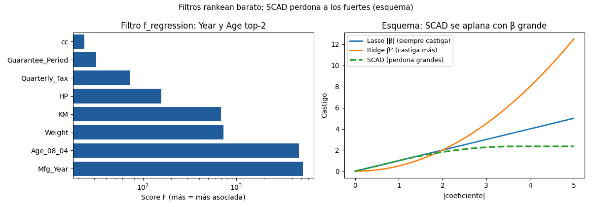

Bloque D · Regresión lineal, selección y regularización · Lección 0022 · mié 23 sep
SCAD, elastic net y filtros: el resto del arsenal
Win de hoy: entender SCAD (perdona fuertes), probar elastic net (α=1: CV 0,846) y rankear con filtros (Year > Age > Weight > KM…).
1 · SCAD: matar chicos sin castigar grandes
Lasso tiene un defecto: achica hasta a los coeficientes importantes (sesgo). SCAD (smoothly clipped absolute deviation, Fan & Li) lo corrige: castiga como Lasso cerca de 0 (mata chicos) pero se aplana con coeficientes grandes (los deja en paz). En el esquema: la curva verde sube y se queda plana, mientras L1/L2 siguen subiendo. Detalle honesto: SCAD no está en scikit-learn (penalización no convexa, otro optimizador); en este curso va por concepto, con la referencia teórica (ESL).
2 · Elastic net: Lasso + Ridge en una perilla
Mezcla ambas multas con l1_ratio (1 = Lasso puro, 0 = Ridge puro). Con l1_ratio=0,5 y
α=1: CV 0,846, las 8 vivas. ¿Cuándo? Duplicadas y ganas de podar: Ridge estabiliza el grupo, Lasso corta
afuera. Advertencia medida: α=10 hunde el CV a 0,50 y α=100 a 0,08 — elastic net exige calibrar α con CV, no a ojo.
from sklearn.linear_model import ElasticNetCV
ElasticNetCV(l1_ratio=0.5, cv=5).fit(X_estandarizada, y)3 · Filtros: rankear barato (y su ceguera)
Los filtros rankean cada columna sola contra el target (f_regression):
Year (5190) > Age (4758) > Weight (731) > KM (690) > HP > Tax > Guarantee > cc. Barato y útil
para pre-filtrar miles de columnas… pero ciego a redundancias: Year y Age ocupan el top-2 juntas
pese a r = −0,98. El filtro propone; la selección multivariada (0020–0021) dispone. Con target categórico el filtro
análogo es Chi-cuadrado:
Fuel_Type vs caro/barato da χ² = 4,9 (p = 0,087): el combustible no informa el tramo de precio —
el filtro también sirve para descartar.
4 · Figura: ranking y castigos

Regenerar la figura (mismo resultado versionado en assets/img/toyota/):
python3 scripts/make_figures.py --only scad-elastic-filtros5 · Quiz (auto-chequeo inmediato)
6 · Fuente primaria y cierre
Para profundizar (1 fuente): Hastie, Tibshirani & Friedman, The Elements of Statistical Learning — capítulo de selección y regularización (Lasso, elastic net, SCAD) (ElemStatLearn, PDF libre; también en RESOURCES.md del curso).
¿Algo no quedó claro? Preguntame al agente: cuándo SCAD le gana a Lasso, cómo calibrar elastic net, o filtros vs selección real. Esa pregunta vale más que releer.
Orden Bloque D: siguiente en el bloque, 0032 · PCA y biplot: comprimir variables que repiten la historia: mar 29, reducción de dimensionalidad (PCA, biplot y PCR).